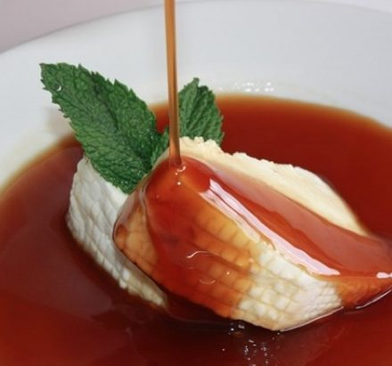

Curd-with-honey
This typical sweet combines the best of two worlds: the Spanish introduced curdled milk while the native population introduced the so-called “melao”; a syrup that is based on panela, water and maintains a diversity of uses in Colombian gastronomy. This sweet is a perfect complement to curdled milk. In addition, the dessert has a little cinnamon and a teaspoon of lemon as a seasoning.
Preparation time
- Total: Approximately 60 minutes.
- Preparation: 35 minutes.
- Cooking: 25 minutes.
Instructions
- In a saucepan over the heat, put the water, cinnamon sticks and brown sugar. We stir and let it boil for 20 minutes.
- While the ingredients are on the heat, we cut the curd into medium slices and arrange them on the plate.
- After the honeydew cooking time has elapsed, we remove the saucepan from the heat.
- Add the teaspoon of lemon juice and stir.
- We pour the honeydew over the curdled milk pieces.
- We serve